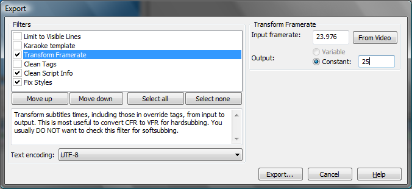

In addition to the normal "Save" and "Save as" functions, Aegisub also has an "Export" feature, which can transform the entire script through various export filters. This is used for a number of things ranging from framerate conversions over karaoke effect generation to just saving to other formats and/or character sets.

The upper half of the window contains the available filters. Ticking one or more of them will apply them in the order they are listed; use the move up/down buttons to change the order. The lower half contains a brief description of the selected filter.
Some filters have configuration parameters; those that do will extend the window to the right and put any settings controls there.
The dropdown menu at the bottom controls what text encoding will be used for the exported file. May be useful for exporting to legacy programs that do not support Unicode.
When you click the "Export" button, do note that you can choose other formats than ASS to save to. Also note that this will almost always mean that a lot of formatting tags will be stripped.
The following filters are available in the default installation:
Exports only the lines that are currently visible on the active video frame. Does nothing if you do not have video loaded. Script headers and styles etc. are also exported.
Filters the script through the automation script "karaoke templater" to generate karaoke effects. See the karaoke templater and automation overview pages for further details.
In "constant" output mode, recalculates every single timestamp in the script (including ones contained in override tags) to work with a new framerate. Note that this means that the entire script will be "sped up" or "slowed down". Can be used for NTSC->PAL conversions or vice versa.
In "variable" output mode, uses the framerate of the loaded video (or the specified one, if different from the video's) and the loaded timecodes to recalculate every single timestamp in the script so that the exported subtitles can be hardsubbed on the loaded video and still sync up after timecodes are taken into account. Does nothing if you do not have timecodes loaded. See variable framerate video for further details.
Filters the script through the "clean tags" automation script, which tries to clean up the override tag blocks by concatenating adjacent blocks and removing redundant tags (more specifically, the second instance of tags that can only be specified once per line).
Cleans the script headers by removing all lines that are not absolutely essential for proper display of the script. If you're paranoid, you should consider using this for scripts that you plan on distributing in the original form, since Aegisub stores things like the path to the last opened video/audio etc. in the script headers.
Goes through all the lines of the script and checks what style they use; any lines that use a style that isn't available in the current script is replaced with Default.